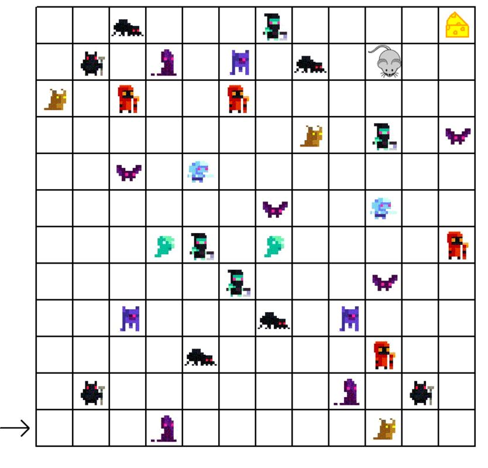
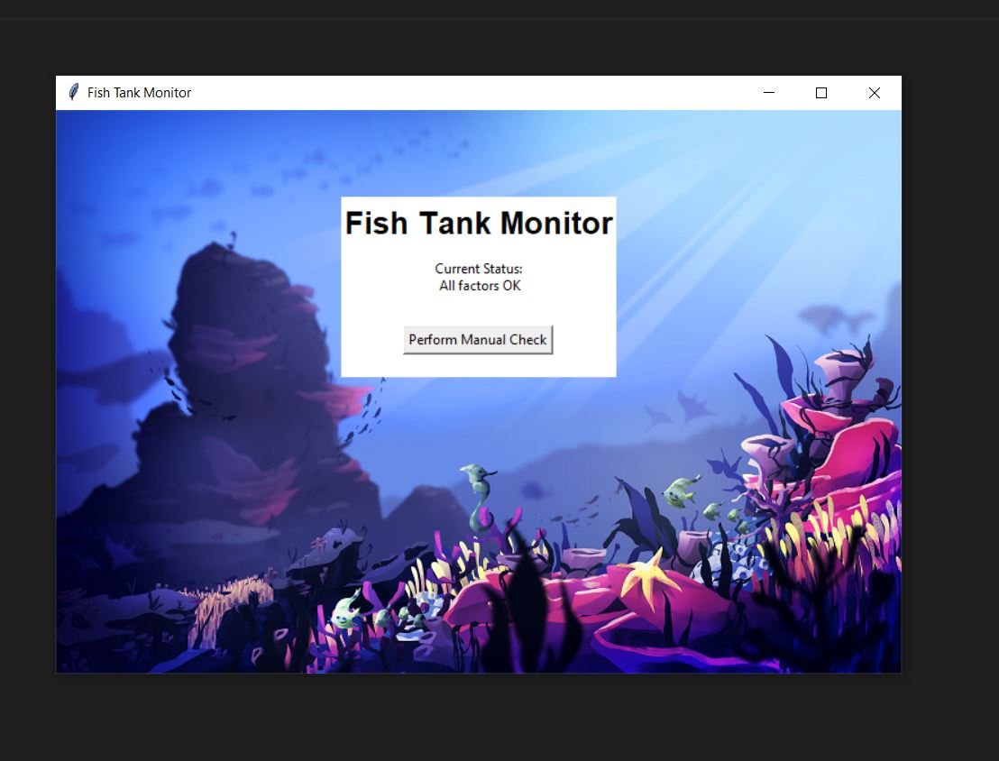
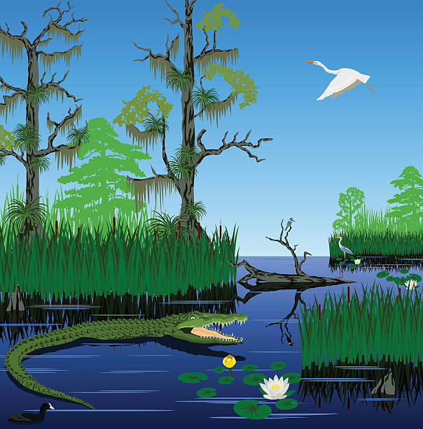

Portfolio Page!

For this project we decided to make a mouse move through a maze filled with enemies in
order to reach a piece of cheese at the end. After reaching the cheese, the mouse would
continue into an enemy and "die". To create this project, we drew the background grid
and imported the enemies as turtles. We created a mouse turtle and gave it custom
movements to create its way around the maze.
For this project, we decided to create an archery game with moving targets. Players enter
their name and difficulty and then have 20 seconds to shoot as many targets as possible. While
they try to get the targets, the targets are moving around the screen at a speed that is
based off the difficulty they chose.
For this Scratch project, we decide to remix a parkour platformer game to add a challenge
aspect to our game. We changed the design, costumes, and levels for our game to make it
original so we used a rabbit and scenery of nature. We got our rabbit to change costumes
when it moves to give it the effect of running and there are 30 levels for the user to
complete. Click here to play the game.

For this project we had to look through different evidence to find the location and cause of a data
breach. We first looked for suspicious activity and located errors in the code. We then fixed the errors in
the code that we found so the program would run without any unexpected errors.

For this project, we concluded that the rover was likely in a marsh lands biome based on the data collected.
The small deviation in the angular position of the rover told us it was likely in a location with flatter
grounds. The constant higher pitched sound told us it was likely slightly noisy where the rover was. The
quick change in the light data could be caused from the change of night time to day time or from the rover
coming out from a shady area. Lastly, the constant temperature throughout the day corresponds with the little
variation of temperature in the marshlands.